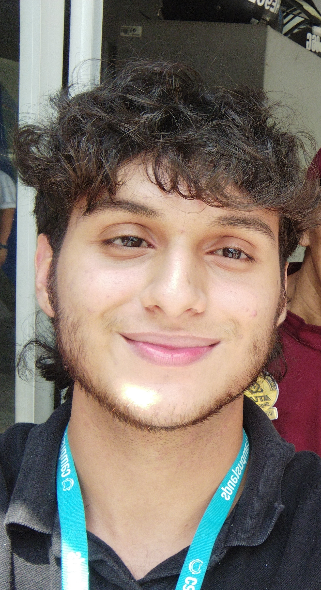

|

|
Estudios
Tecnico Bachiller:
Colegio Reggio Amelia
Curso de ingles
Universdiad Industrial de Santander (B1)
Habilidades:
Trabajo en equipo, Manejo del estres,
Comunicación efectiva, Pensamiento crítico
|
Proyectos
Mi objetivo es terminar mi tiempo
en Campuslands, aprovechando al máximo
cada aprendizaje y cada desafío que
se presente. Estoy buscando conseguir
un trabajo que no solo me permita ganar
experiencia práctica en el campo que estudio,
sino que también me ayude a crecer
profesionalmente mientras sigo con mis estudios
universitarios. La idea es que cada tarea,
cada proyecto que tome, sume a mi carrera y
me prepare para lo que viene.
No quiero limitarme solo a lo académico, sino vivir
la experiencia laboral desde ahora. Con todo eso,
mi próximo paso será hacer una especialización,
algo que me dé las herramientas y el conocimiento
avanzado para destacar en mi campo, ser un
experto en lo que hago y estar siempre un paso adelante.
El futuro es mío, y voy a aprovechar cada oportunidad
para lograr mis metas.
|
Información
Nombre: Juan Santoyo
Edad: 17 años
Fecha de nacimiento: 10 de mayo de 2007
Dirección: cl. 7 #7-50
Correo: juanda.c0512@gmail.com
Teléfono: 3204496489
|
Habilidades
Programación:
Python, VexIQ
Idiomas:
Español, Ingles
Habilidades:
Trabajo en equipo, Manejo del estres,
Comunicación efectiva, Pensamiento crítico
|